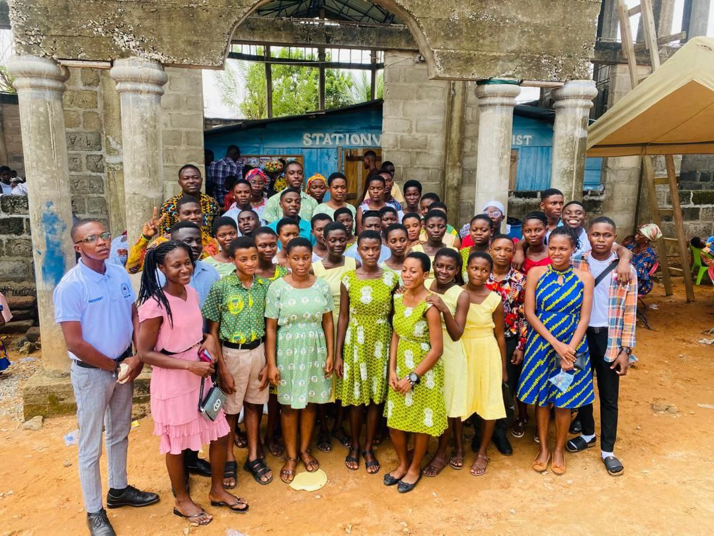

Welcome to The Church of Christ Ministry – Fosco Chapter, Assin Fosu
“A Royal Priesthood” – Serving Christ at Fosu College of Education.
“Greet one another with a holy kiss. The churches of Christ greet you.”

Welcome to Fosco Chapter
The Church of Christ Ministry – Fosco Chapter at Fosu College of Education. A royal priesthood committed to New Testament Christianity, spiritual growth, and the training of students to become faithful servants in the Lord’s church.